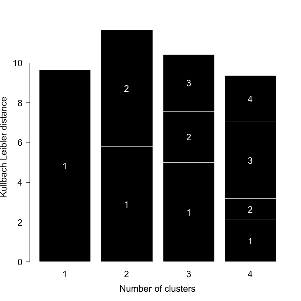

Version: 2.0
Run ID: 44506
Run name: gibbs_44506
Platform: Darwin arm64
Read 200 unique sequences from file
Settings:
No shift moves, cluster moves at every iteration
Number of clusters: 1 - 4
Motif length: 9
Initial MC temperture: 1.5
Number of temperature steps: 20
Number of iterations x Sequence x Tstep: 10
Max insertion length: 1
Max deletion length: 5
Interval between Indel moves: 10
Number of initial seeds: 3
Penalty lambda: 0.8
Weight on small clusters: 5
Sequence weighting type: 0
Background model: Uniprot pre-calculated
Use trash cluster to remove outliers: 0
|
KLD vs. Number of clusters with λ = 0.8
|
Identified 2 sequence motifs
|
|

View the barplot in full size |
RESULTS for 1 CLUSTERS | ||||||||||||||||||||||||||||||
Final Average KLD: 9.658308
| ||||||||||||||||||||||||||||||
RESULTS for 2 CLUSTERS | ||||||||||||||||||||||||||||||
Final Average KLD: 11.677912
| ||||||||||||||||||||||||||||||
RESULTS for 3 CLUSTERS | ||||||||||||||||||||||||||||||
Final Average KLD: 10.436193
| ||||||||||||||||||||||||||||||
RESULTS for 4 CLUSTERS | ||||||||||||||||||||||||||||||
Final Average KLD: 9.368982
| ||||||||||||||||||||||||||||||
Explain the output
Read the instructions